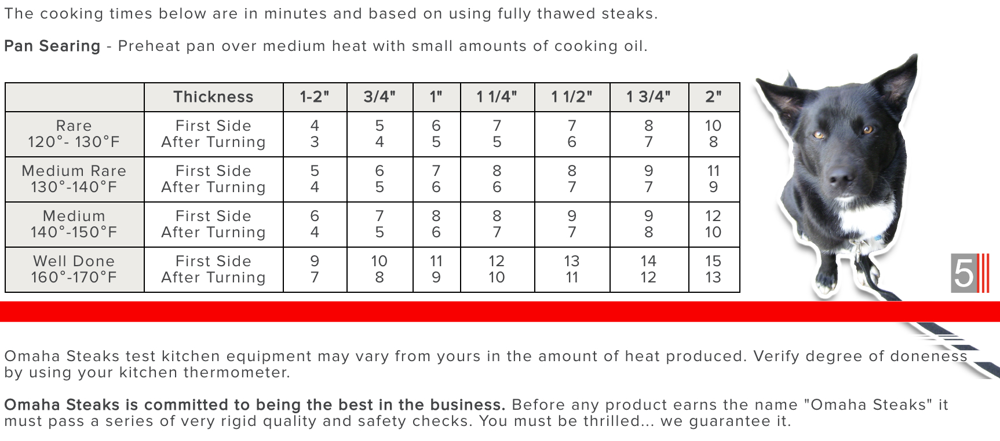

@stalekracker TikTok Pan Seared Steak ::
by 5
Last Updated: Sunday, February 18, 2024 @ 007 hrs. Click here for source.
Hit it with some fresh garlic!
~ @stalekracker
INGREDIENTS
1 or 2 filet mignon steaks [ E3 Ranch | Rastelli's + Greensbury Farms | Sakura Wagyu Farms ]
1 to 1.5 sticks of unsalted butter
5 to 7 garlic cloves
crushed sea salt
ground black pepper
a cast iron skillet
a stopwatch timer (e.g. a mobile)
a spoon
tongs
INSTRUCTIONS (SOURCE B - Instructional video)
- Allow the raw steak to reach room temperature.
- Prepare the meat, and let the meat rest for a second after preparation. The preparation of the meat is as follows:
- After the meat reaches room temp., take some of the softened (room temp.) unsalted butter, and massage the butter into the surface of the meat all around.
- Next, sprinkle the “butter-massaged meat” all over with a coating of your favorite gourmet dry seasoning; even a basic application of crushed sea salt and freshly ground black pepper will do just fine.
- I like to keep this seasoned-and-ready-for-a-hot-skillet meat in a sealed plastic container until cooking time.
- Prepare the crushed fresh garlic as follows:
- Crush 5 to 7 garlic cloves.
- Put the prepared garlic into a cup or bowl and place this aside. Soon, the fresh garlic will be thrown into the cast iron skillet just as the unsalted butter is melting so that this dish can be hit with some fresh garlic. Watch the instructional video.
- To get respect, follow this “Pan Seared Steak :: ‘Hit it with some fresh garlic’” TikTok recipe correctly just like how it was done by the sauce, @stalekracker. Therefore, once the cooking has started, and as soon as the crushed garlic hits the skillet, energetically speak the following words:
“Hit it with some fresh garlic!”
- With the seasoned meat resting, and with fresh crushed garlic put to the side,...next, prepare a cast iron skillet as follows:
- Clean the cast iron skillet with mild soap and water.
- Thoroughly dry the cast iron skillet.
- Coat the cast iron skillet with a light application of olive oil in order to “season” the skillet. After cooking is complete, and before storing the skillet long-term, this should always be the final step for a long-lasting skillet and for getting consistently quality results in cooking.
- Now, it is game time. Cook the meat as follows:
- First, preheat the cast iron skillet over a high-to-medium flame. Do not proceed until water drops are explosive on the skillet. For flavor, the skillet should have sufficient heat at the beginning in order to sear the meat properly.
- Next, melt a stick of unsalted butter into the skillet. Note: Unsalted butter is called for here, but I will use olive oil in place of butter when supplies run out.
- As the butter is melting, throw all of that fresh crushed garlic into the cast iron skillet whilst saying the words, “Hit it with some fresh garlic!”
- Into the midst of the crushed garlic, carefully lay (side A first) the steak(s) down into the cast iron skillet.
- See the following demonstration for a 2 to 3 inch thick steak to be cooked RARE:
- Cook side A for 2 minutes.
- Turn the meat to side B, and use a spoon to continuously baste the meat as it cooks for 1 minute…testing meat firmness until side B is done.
- For thick cut steaks, hold the meat up on its edge in the skillet for about a 10 second count.
- For thick cut steaks, rotate the meat on its side another 90 degrees, and hold it there on the skillet for another 10 second count; repeat this until the meat is seared for flavor on the top, bottom, and all sides.
- See the chart (SOURCE C) for recommended cooking times in the appendix.
- Move the meat to a plate, and allow it to cool before enjoying.

APPENDIX
SOURCE A
https://www.hy-vee.com/recipes-ideas/advice-how-tos/food-love/how-to-pan-sear-steak
- Let the steak stand at room temperature for 30 minutes.
- Heat a cast iron skillet over medium-high heat. The steak should be towel dry.
- Season the meat...with salt and pepper.
- Add 1 to 2 tablespoons of olive oil to the hot cast iron, and swirl it around in the pan until it shimmers.
- Add the steak to hot skillet. Cook x min on each side or until a deep brown crust forms.
- Reduce heat to medium; add 1 tablespoon butter and desired fresh herbs.
- Baste juices over meat continuously (130 for med-rare, 140 for med, 150 for med-well).
- Allow to rest on a plate for 5 to 10 min.
SOURCE B
https://www.tiktok.com/@stalekracker/video/6909260425943158021?lang=en
- Melt a stick of UNSALTED butter in a pan. (Note: Unsalted butter)
- As the butter is melting in the pan, hit it with some fresh garlic (i.e. now add the garlic).
- Med. heat; lay the steaks (dry season w/black pepper, salt, garlic powder) into the pan.
- Give about 3 min on one side, then flip ‘em...and start basing with juices.
- Cook the other side for a little less time than the first side.
- Hit ‘em with some flame (on grill) to get that sear on each side.
- “...MONEY, DUDE!” - @stalekracker, TikTok.
SOURCE C
https://www.omahasteaks.com/blog/pan-searing-cooking-chart/
